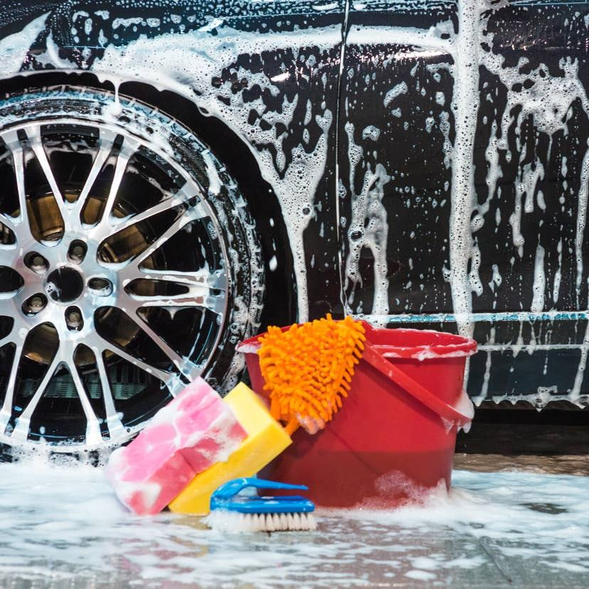
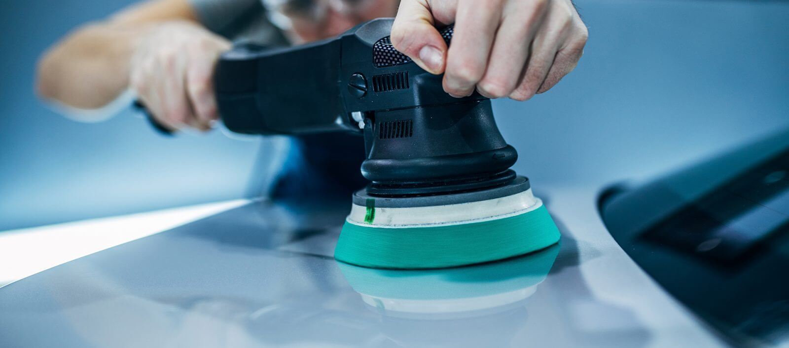

Buff Guys Mobile Detail and Customs
Mobile auto detailing and customization in Topeka, by appointment.
Call (785) 213-8677 Email buffguysdetailandcustoms@gmail.com

About
Buff Guys Mobile Detail and Customs provides mobile auto detailing and customization in Topeka. The service comes to the vehicle, and work is by appointment only, with calls returned within 48 business hours. The business also lists its site header as Buff Guys Detail and Customs.
Detailing and customization
Detailed cleaning
Detailed cleaning, listed on the own site.
Window tinting
Window tinting, listed on the own site.
PPF
Paint protection film, listed on the own site.
Ceramic coating
Ceramic coating, listed on the own site.
Fleet and car-lot work
Fleet and car-lot work, listed on the own site.
Mobile service
Mobile service that comes to the vehicle, by appointment only.
Detailing that comes to you
Buff Guys Mobile Detail and Customs works by appointment only in Topeka. Call (785) 213-8677 to ask about a booking; calls are returned within 48 business hours.
Find Buff Guys on Facebook and Instagram, linked from the business's own site.
Gallery


All gallery photos are stock photos, labeled as such. They show the kind of work and setting described on this page, not this business.
Visit
Address: 2525 NW Topeka Blvd, Topeka, KS 66617
Hours: Monday to Friday 8:00 AM to 5:00 PM.
Phone: (785) 213-8677
Contact
Call (785) 213-8677 Email buffguysdetailandcustoms@gmail.com
Buff Guys Mobile Detail and Customs serves Topeka, KS. Questions? Call (785) 213-8677.